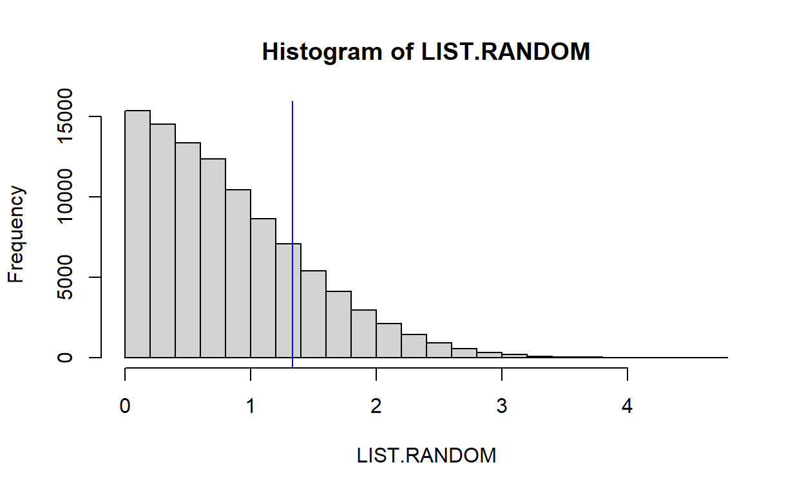

Hypotheses
A hypothesis is a claim. The hypothesis that we test is called the null hypothesis. Everything not included in the null hypothesis is included in the alternative hypothesis. For example:
The null hypothesis: There is no association.
The alternative
hypothesis: There is an association.
The null hypothesis: Participants will not have a gender bias.
The alternative hypothesis: Participants will have a gender bias.
The null hypothesis: The treatment will reduce gender bias.
The
alternative hypothesis: The treatment will not reduce gender bias.
Quiz
p-values
Let’s introduce an important tool: the p-value. The p-value is a measure of the strength of the evidence that an analysis provides against the null hypothesis.
If an analysis provided no evidence against the null hypothesis, the p-value is 1. The lower the p-value is, the more evidence the analysis provided against the null hypothesis. A p-value of zero would indicate that the analysis provided infinitely strong evidence against the null hypothesis.
Quiz
Calculating p-values
Suppose that our null hypothesis is that our coin is fair. So we flip the coin four times. Here are the 16 possible outcomes for a fair coin, with each outcome equally likely:
4 heads: HHHH 3 heads: HHHT HHTH HTHH THHH 2 heads: HHTT HTHT HTTH THHT THTH TTHH 1 heads: HTTT THTT TTHT TTTH 0 heads: TTTT
If our coin landed on heads 4 times in 4 flips, the p-value would be the percentage of times that a fair coin would be expected to produce an outcome at least as extreme as 4 heads in 4 flips. The “at least as extreme” in this case is at least as far from the expected long-run average for a fair coin of 50% heads and 50% tails. In this example, the only outcomes that are at least as extreme as 4 heads in 4 flips are HHHH and TTTT. So 2 outcomes of 16 possible outcomes produces a p-value of 2/16 or 0.125. This p-value of 0.125 means that, 12.5% of the time, a fair coin flipped 4 times would be expected to be as far from fairness as our HHHH coin was from fairness; the other 87.5% of the time, a fair coin would be expected to be closer to fairness than our HHHH coin was to fairness.
We can use a statistical program called R to calculate this p-value in a binomial test. A binomial test is useful for calculating p-values for binary outcomes. The binom.test command below will calculate a p-value for a situation in which there were “x” heads in n” coin flips, in which the probability is “p” for each coin landing on heads. Click the “Run Code” button below:
binom.test(x=4, n=4, p=0.50)Quiz
Enter and run R code using the R “binom.test()” function to calculate the p-value for the test of the null hypothesis that a coin is fair, for a coin that landed on heads exactly 54 times in 100 flips. You should get a p-value of p=0.4841.
Hypothesis testing
The basic logic of hypothesis testing is to:
- Select a null hypothesis.
- Collect observations to test the null hypothesis.
- Assess how likely the observed data would be if the null hypothesis were true.
- If the observed data would be too unlikely to have occurred if the null hypothesis were true, then reject the null hypothesis and accept the alternative hypothesis; otherwise, do not accept or reject the null hypothesis or the alternative hypothesis.
The conventional threshold for rejecting the null hypothesis is p=0.05 in political science. For reference, given a null hypothesis that the coin is fair, the p-value is 0.0625 for a coin that landed on heads 5 times in 5 flips.
Suppose that our null hypothesis is that our coin is fair. The coin lands on heads exactly 1 time in 10 flips, so that the p-value is 0.02 for this test of the null hypothesis. Based on this p-value, we would reject the null hypothesis that the coin is fair, and accept the alternative hypothesis that the coin is not fair.
But suppose that the coin landed on heads exactly 2 times in 10 flips, so that the p-value is 0.11 for the test of the null hypothesis that the coin is fair. Based on this p-value, we would not reject or accept the null hypothesis that the coin is fair, and we would not accept or reject the alternative hypothesis that the coin is not fair. The observed data provided some evidence that the coin is unfair, so we would not want to reject the alternative hypothesis that the coin is unfair. But the observed data also did not provide enough evidence for us to reject the null hypothesis that the coin is fair.
Quiz
Confidence intervals
Let’s discuss the 95% confidence interval of [0.4286584, 0.5713416] in the output for the binomial test below, for a coin flipped 200 times that landed on heads exactly 100 times. Click “Run Code” to run the binomial test:
binom.test(x=100, n=200, p=0.50)The 95% confidence interval in this case rounds to [0.43, 0.57]. The 0.43 and 0.57 are the ends of the range of the middle 95% of percentage heads that are expected when a fair coin is flipped 200 times. So the bottom end of the 95% confidence interval indicates that, in 200 flips, about 2.5% of coin flips are expected to have less than 43% heads, and the top end of the 95% confidence interval indicates that, in 200 flips, about 2.5% coin flips are expected to be greater than 57% heads.
Below is an R simulation to illustrate this. Click “Run Code” to run the code:
LIST.PCTS <- c() # Make a blank list
COINS <- c(0,1) # Make a list of coin outcomes (0=Tails, 1=Heads)
for (i in 1:25000){ # Run the bracketed code 10 thousand times
PCT.HEADS <- sum(sample(COINS,200,replace=T))/200 # Get the percentage heads for a random sample of a fair coin flipped 200 times
LIST.PCTS <- append(LIST.PCTS, PCT.HEADS) # Add that percentage heads to the list of percentages
}
LO95 <- quantile(LIST.PCTS, 0.025) # Get the low end of the 95% confidence interval
HI95 <- quantile(LIST.PCTS, 0.975) # Get the high end of the 95% confidence interval
breaks <- hist(LIST.PCTS, breaks=seq(0.3255,0.6705,0.005), plot=FALSE)$breaks # Get a list of breaks for the histogram
colors <- rep("gray80", length(breaks)) # Start with all colors in the histogram as "gray80"
colors[(breaks < LO95) | (breaks > HI95)] <- "blue" # Change the colors to "blue" if the histogram bar is
# lower than the low end of the 95% confidence interval or
# higher than the high end of the 95% confidence interval
hist(LIST.PCTS, breaks=seq(0.3255,0.6755,0.005), ylim=c(0,1800), col=colors) # Plot the histogramLet’s run another simulation, this time illustrating the fact that, if drawing random samples from a set of data, 95% of the 95% confidence intervals for the mean of the data are expected to contain the true mean. In the simulation, the red lines are 95% confidence intervals that do not contain the true mean, and the gray lines are 95% confidence intervals that do contain the true mean. Click “Run Code” to run the simulation:
Y <- 100000 # The top number in our dataset.
DATA <- 0:Y # This gets a dataset that ranges from 0 to 100,000.
TRUE.MEAN <- mean(DATA) # This is the true mean of the dataset.
RUNS <- 2000 # This is the number of runs our simulation will have.
COUNTER <- 0 # This is our counter.
plot(NULL, xlim=c(0,RUNS), ylim=c(0,Y), yaxt="n", xlab="Run #", ylab="95% CIs") # Sets up the plot
axis(side=2, at=seq(0,2000,500), labels=TRUE) # Sets up the y-axis
for (i in 1:RUNS){
SAMPLE.SIZE <- 10 # Set to sample 10.
SAMPLE <- sample(DATA, SAMPLE.SIZE, replace=F) # Draw a sample of 10 from DATA.
SAMPLE.MEAN <- mean(SAMPLE) # Get the mean of that sample.
SD <- sd(SAMPLE) # Get the standard deviation of the sample.
T.STATISTIC <- qt(0.975, df=SAMPLE.SIZE-1) # This is used to calculate the confidence interval.
CI.WIDTH <- T.STATISTIC * SD/sqrt(SAMPLE.SIZE) # This is the width of the confidence interval.
CI.LO <- SAMPLE.MEAN - CI.WIDTH # This is the low end of the confidence interval.
CI.HI <- SAMPLE.MEAN + CI.WIDTH # This is the high end of the confidence interval.
if((TRUE.MEAN >= CI.LO) & (TRUE.MEAN <= CI.HI)){ # This "if" sequence plots a gray line for
COUNTER <- COUNTER + 1 # 95% confidence intervals that contain
segments(i, CI.LO, i, CI.HI, col="gray") # the true mean, and plots a red line for
} else { # 95% confidence intervals that does not
segments(i, CI.LO, i, CI.HI, col="firebrick4") # contain the true mean.
}
}
abline(h=TRUE.MEAN, col="dodger blue") # Plots the true mean
print("Percentage of 95% confidence intervals that contain the true mean:")
100 * COUNTER / RUNSThe confidence interval above was a 95% confidence interval. But other confidence intervals are possible. The higher then percentage for the confidence interval, the wider the confidence interval. For example, a 99% confidence interval must contain the true mean 99% of the time, so the number of means in a 99% confidence interval must be larger than for a 95% confidence interval.
Here is a simulation for 50% confidence intervals, illustrating that only about half of 50% confidence intervals contain the true mean. Click “Run Code” to run the simulation:
Y <- 100000
DATA <- 0:Y
TRUE.MEAN <- mean(DATA)
RUNS <- 2000
COUNTER <- 0
plot(NULL, xlim=c(0,RUNS), ylim=c(0,Y), yaxt="n", xlab="Run #", ylab="95% CIs")
axis(side=2, at=seq(0,2000,500), labels=TRUE)
for (i in 1:RUNS){
SAMPLE.SIZE <- 10
SAMPLE <- sample(DATA, SAMPLE.SIZE, replace=F)
SAMPLE.MEAN <- mean(SAMPLE)
SD <- sd(SAMPLE)
T.STATISTIC <- qt(0.750, df=SAMPLE.SIZE-1) # This is the line that changed for 50% confidence intervals.
CI.WIDTH <- T.STATISTIC * SD/sqrt(SAMPLE.SIZE)
CI.LO <- SAMPLE.MEAN - CI.WIDTH
CI.HI <- SAMPLE.MEAN + CI.WIDTH
if((TRUE.MEAN >= CI.LO) & (TRUE.MEAN <= CI.HI)){
COUNTER <- COUNTER + 1
segments(i, CI.LO, i, CI.HI, col="gray")
} else {
segments(i, CI.LO, i, CI.HI, col="firebrick4")
}
}
abline(h=TRUE.MEAN, col="dodger blue")
print("Percentage of 50% confidence intervals that contain the true mean:")
100 * COUNTER / RUNSRandomized experiments
Random assignment error
Suppose that we have a group of male participants and female participants. We randomly assign each participant a number from 0 to 100. We then calculate the mean of the numbers among the male participants and the mean of the numbers among the female participants. There is no reason to expect the mean to be higher among male participants or lower among male participants, compared to the mean among female participants. But if the mean among male participants does differ than the mean among female participants, we call that random assignment error.
Typically, random assignment error decreases as sample size increases. Let’s illustrate that below, with a plot in which the x-axis is the sample size of a random draw of numbers from 0 to 100, and the y-axis is the mean of the numbers in that draw. The plot of points is expected to get closer to the true mean of 50 as the sample size increases.
plot(NULL, xlim=c(0,800), ylim=c(20,80), xlab="Sample size", ylab="Mean")
abline(h=50, col="dodgerblue")
for (i in 1:800){
SAMPLE <- mean(sample(0:100, i, replace=T))
points(i, SAMPLE, pch=16, cex=0.5)
}The logic of a randomized experiment
The typical political science randomized experiment works like this: 1. Gather a set of participants. 2. Randomly assign each participant to a group. 3. Treat the groups differently. 4. Measure something about the groups.
The observed difference between groups in Step 4 must be due to some combination of: * the treatment difference in Step 3 causing the observed difference * random assignment error in Step 2 causing the observed difference
And if the p-value is less than 0.05 for a test of the null hypothesis that the mean of one group equals the mean of the other group, then we can eliminate random assignment error as a likely explanation for the observed difference.
Sample analysis of data from a randomized experiment
Let’s analyze data from the experiment in the Rice et al. 2021 Journal of Politics article “Same as it ever was? The impact of racial resentment on White juror decision-making”. In this experiment, participants were randomly assigned to read a story about a basketball player who was accused of a crime and had a White-sounding name of Bradley Schwartz, or to read the same story but in which the basketball player accused of a crime had a Black-sounding name of Jamal Gaines.
One of the outcomes of the experiment was an indication of whether the basketball player was guilty. Among the 301 White participants assigned to the “Bradley” treatment, 157 reported a guilty judgment, 143 reported a not guilty judgment, and 1 did not report a judgment; among the 350 White participants assigned to the “Jamal” treatment, 159 reported a guilty judgment, 190 reported a not guilty judgment, and 1 did not report a judgment.
So, among White participants, 157 of 301 reported a guilty judgment for Bradley, and 159 of 350 reported a guilty judgment for Jamal. Let’s test the null hypothesis that the percentage that reported a guilty judgment for Bradley equals the percentage that reported a guilty judgment for Jamal.
For this, we can use a Fisher’s exact test. Click “Run Code” to run the Fisher’s exact test:
RICE <- matrix(c(157,144,159,191), nrow=2,
dimnames=list(Verdict=c("Guilty","Other"),Treatment=c("Bradley","Jamal")))
print(RICE)
fisher.test(RICE)Below is a simulation that should produce an estimate of the p-value close to the 0.09861 p-value from the Fisher’s exact test:
DIFF.OBSRVD <- abs(157/301 - 159/350)
COMBINED <- c(rep.int(1,316), rep.int(0,335))
COUNTER <- 0
RUNS <- 100000
for (i in 1:RUNS){
BRADLEY <- sum(sample(COMBINED, 301, replace=FALSE))
JAMAL <- 316 - BRADLEY
DIFF.RANDOM <- abs(BRADLEY/301 - JAMAL/350)
if (DIFF.RANDOM >= DIFF.OBSRVD) {
COUNTER <- COUNTER + 1
}
}
COUNTER / RUNSFor another outcome measured in the Rice et al experiment after the story was presented, participants were asked to recommend a sentence length between zero months and 60 months for the basketball player.
Below is a list of these sentence lengths:
library(tidyverse)
RICE <- tribble(
~TREAT,~LENGTH,
"Bradley", 0,"Bradley", 0,"Bradley", 0,"Bradley", 0,"Bradley", 0,"Bradley", 0,"Bradley", 0,
"Bradley", 0,"Bradley", 0,"Bradley", 0,"Bradley", 0,"Bradley", 0,"Bradley", 0,"Bradley", 0,
"Bradley", 0,"Bradley", 0,"Bradley", 0,"Bradley", 0,"Bradley", 0,"Bradley", 0,"Bradley", 0,
"Bradley", 0,"Bradley", 0,"Bradley", 0,"Bradley", 0,"Bradley", 0,"Bradley", 0,"Bradley", 0,
"Bradley", 0,"Bradley", 0,"Bradley", 0,"Bradley", 0,"Bradley", 0,"Bradley", 0,"Bradley", 0,
"Bradley", 0,"Bradley", 0,"Bradley", 0,"Bradley", 0,"Bradley", 0,"Bradley", 0,"Bradley", 0,
"Bradley", 0,"Bradley", 0,"Bradley", 0,"Bradley", 0,"Bradley", 0,"Bradley", 0,"Bradley", 0,
"Bradley", 0,"Bradley", 0,"Bradley", 0,"Bradley", 0,"Bradley", 0,"Bradley", 0,"Bradley", 0,
"Bradley", 0,"Bradley", 0,"Bradley", 0,"Bradley", 0,"Bradley", 0,"Bradley", 0,"Bradley", 0,
"Bradley", 0,"Bradley", 0,"Bradley", 0,"Bradley", 0,"Bradley", 0,"Bradley", 0,"Bradley", 0,
"Bradley", 0,"Bradley", 0,"Bradley", 0,"Bradley", 0,"Bradley", 0,"Bradley", 0,"Bradley", 1,
"Bradley", 1,"Bradley", 1,"Bradley", 1,"Bradley", 1,"Bradley", 1,"Bradley", 1,"Bradley", 1,
"Bradley", 1,"Bradley", 1,"Bradley", 1,"Bradley", 1,"Bradley", 1,"Bradley", 1,"Bradley", 1,
"Bradley", 1,"Bradley", 1,"Bradley", 1,"Bradley", 1,"Bradley", 1,"Bradley", 1,"Bradley", 1,
"Bradley", 1,"Bradley", 1,"Bradley", 1,"Bradley", 1,"Bradley", 1,"Bradley", 1,"Bradley", 1,
"Bradley", 1,"Bradley", 1,"Bradley", 1,"Bradley", 1,"Bradley", 1,"Bradley", 1,"Bradley", 1,
"Bradley", 1,"Bradley", 1,"Bradley", 1,"Bradley", 1,"Bradley", 1,"Bradley", 1,"Bradley", 1,
"Bradley", 1,"Bradley", 1,"Bradley", 1,"Bradley", 1,"Bradley", 1,"Bradley", 2,"Bradley", 2,
"Bradley", 2,"Bradley", 2,"Bradley", 2,"Bradley", 2,"Bradley", 2,"Bradley", 2,"Bradley", 2,
"Bradley", 2,"Bradley", 2,"Bradley", 2,"Bradley", 2,"Bradley", 2,"Bradley", 2,"Bradley", 2,
"Bradley", 2,"Bradley", 2,"Bradley", 2,"Bradley", 2,"Bradley", 2,"Bradley", 3,"Bradley", 3,
"Bradley", 3,"Bradley", 3,"Bradley", 3,"Bradley", 3,"Bradley", 3,"Bradley", 3,"Bradley", 3,
"Bradley", 3,"Bradley", 4,"Bradley", 4,"Bradley", 4,"Bradley", 4,"Bradley", 4,"Bradley", 4,
"Bradley", 4,"Bradley", 4,"Bradley", 4,"Bradley", 4,"Bradley", 4,"Bradley", 4,"Bradley", 4,
"Bradley", 4,"Bradley", 4,"Bradley", 5,"Bradley", 5,"Bradley", 5,"Bradley", 5,"Bradley", 5,
"Bradley", 5,"Bradley", 5,"Bradley", 5,"Bradley", 5,"Bradley", 5,"Bradley", 5,"Bradley", 6,
"Bradley", 6,"Bradley", 6,"Bradley", 6,"Bradley", 6,"Bradley", 6,"Bradley", 6,"Bradley", 6,
"Bradley", 6,"Bradley", 6,"Bradley", 6,"Bradley", 6,"Bradley", 6,"Bradley", 6,"Bradley", 6,
"Bradley", 6,"Bradley", 6,"Bradley", 6,"Bradley", 6,"Bradley", 6,"Bradley", 6,"Bradley", 6,
"Bradley", 7,"Bradley", 7,"Bradley", 7,"Bradley", 7,"Bradley", 8,"Bradley", 8,"Bradley", 8,
"Bradley", 8,"Bradley", 9,"Bradley", 9,"Bradley", 9,"Bradley", 9,"Bradley", 9,"Bradley", 9,
"Bradley", 9,"Bradley", 9,"Bradley", 9,"Bradley", 9,"Bradley", 9,"Bradley",10,"Bradley",10,
"Bradley",10,"Bradley",10,"Bradley",10,"Bradley",12,"Bradley",12,"Bradley",12,"Bradley",12,
"Bradley",12,"Bradley",12,"Bradley",12,"Bradley",13,"Bradley",13,"Bradley",14,"Bradley",15,
"Bradley",15,"Bradley",15,"Bradley",15,"Bradley",15,"Bradley",15,"Bradley",15,"Bradley",15,
"Bradley",15,"Bradley",16,"Bradley",16,"Bradley",18,"Bradley",18,"Bradley",19,"Bradley",19,
"Bradley",23,"Bradley",24,"Bradley",24,"Bradley",24,"Bradley",24,"Bradley",24,"Bradley",27,
"Bradley",28,"Bradley",28,"Bradley",29,"Bradley",30,"Bradley",30,"Bradley",30,"Bradley",30,
"Bradley",30,"Bradley",30,"Bradley",30,"Bradley",30,"Bradley",30,"Bradley",30,"Bradley",30,
"Bradley",31,"Bradley",31,"Bradley",31,"Bradley",36,"Bradley",36,"Bradley",37,"Bradley",41,
"Bradley",41,"Bradley",45,"Bradley",45,"Bradley",46,"Bradley",46,"Bradley",48,"Bradley",48,
"Bradley",49,"Bradley",49,"Bradley",59,"Bradley",59,"Bradley",60,"Bradley",60,"Bradley",60,
"Bradley",60,"Bradley",60,
"Jamal", 0,"Jamal", 0,"Jamal", 0,"Jamal", 0,"Jamal", 0,"Jamal", 0,"Jamal", 0,"Jamal", 0,"Jamal", 0,
"Jamal", 0,"Jamal", 0,"Jamal", 0,"Jamal", 0,"Jamal", 0,"Jamal", 0,"Jamal", 0,"Jamal", 0,"Jamal", 0,
"Jamal", 0,"Jamal", 0,"Jamal", 0,"Jamal", 0,"Jamal", 0,"Jamal", 0,"Jamal", 0,"Jamal", 0,"Jamal", 0,
"Jamal", 0,"Jamal", 0,"Jamal", 0,"Jamal", 0,"Jamal", 0,"Jamal", 0,"Jamal", 0,"Jamal", 0,"Jamal", 0,
"Jamal", 0,"Jamal", 0,"Jamal", 0,"Jamal", 0,"Jamal", 0,"Jamal", 0,"Jamal", 0,"Jamal", 0,"Jamal", 0,
"Jamal", 0,"Jamal", 0,"Jamal", 0,"Jamal", 0,"Jamal", 0,"Jamal", 0,"Jamal", 0,"Jamal", 0,"Jamal", 0,
"Jamal", 0,"Jamal", 0,"Jamal", 0,"Jamal", 0,"Jamal", 0,"Jamal", 0,"Jamal", 0,"Jamal", 0,"Jamal", 0,
"Jamal", 0,"Jamal", 0,"Jamal", 0,"Jamal", 0,"Jamal", 0,"Jamal", 0,"Jamal", 0,"Jamal", 0,"Jamal", 0,
"Jamal", 0,"Jamal", 0,"Jamal", 0,"Jamal", 0,"Jamal", 0,"Jamal", 0,"Jamal", 0,"Jamal", 0,"Jamal", 0,
"Jamal", 0,"Jamal", 0,"Jamal", 0,"Jamal", 0,"Jamal", 0,"Jamal", 0,"Jamal", 0,"Jamal", 0,"Jamal", 0,
"Jamal", 0,"Jamal", 0,"Jamal", 0,"Jamal", 0,"Jamal", 0,"Jamal", 0,"Jamal", 0,"Jamal", 0,"Jamal", 0,
"Jamal", 0,"Jamal", 0,"Jamal", 0,"Jamal", 0,"Jamal", 0,"Jamal", 0,"Jamal", 0,"Jamal", 0,"Jamal", 0,
"Jamal", 0,"Jamal", 0,"Jamal", 0,"Jamal", 0,"Jamal", 0,"Jamal", 0,"Jamal", 0,"Jamal", 0,"Jamal", 0,
"Jamal", 0,"Jamal", 0,"Jamal", 0,"Jamal", 0,"Jamal", 1,"Jamal", 1,"Jamal", 1,"Jamal", 1,"Jamal", 1,
"Jamal", 1,"Jamal", 1,"Jamal", 1,"Jamal", 1,"Jamal", 1,"Jamal", 1,"Jamal", 1,"Jamal", 1,"Jamal", 1,
"Jamal", 1,"Jamal", 1,"Jamal", 1,"Jamal", 1,"Jamal", 1,"Jamal", 1,"Jamal", 1,"Jamal", 1,"Jamal", 1,
"Jamal", 1,"Jamal", 1,"Jamal", 1,"Jamal", 1,"Jamal", 1,"Jamal", 1,"Jamal", 1,"Jamal", 1,"Jamal", 1,
"Jamal", 1,"Jamal", 1,"Jamal", 1,"Jamal", 1,"Jamal", 1,"Jamal", 1,"Jamal", 1,"Jamal", 2,"Jamal", 2,
"Jamal", 2,"Jamal", 2,"Jamal", 2,"Jamal", 2,"Jamal", 2,"Jamal", 2,"Jamal", 2,"Jamal", 2,"Jamal", 2,
"Jamal", 2,"Jamal", 2,"Jamal", 2,"Jamal", 2,"Jamal", 2,"Jamal", 2,"Jamal", 2,"Jamal", 2,"Jamal", 2,
"Jamal", 2,"Jamal", 2,"Jamal", 2,"Jamal", 2,"Jamal", 2,"Jamal", 2,"Jamal", 2,"Jamal", 2,"Jamal", 2,
"Jamal", 2,"Jamal", 2,"Jamal", 2,"Jamal", 3,"Jamal", 3,"Jamal", 3,"Jamal", 3,"Jamal", 3,"Jamal", 3,
"Jamal", 3,"Jamal", 3,"Jamal", 3,"Jamal", 3,"Jamal", 3,"Jamal", 3,"Jamal", 3,"Jamal", 3,"Jamal", 4,
"Jamal", 4,"Jamal", 4,"Jamal", 4,"Jamal", 4,"Jamal", 4,"Jamal", 4,"Jamal", 4,"Jamal", 4,"Jamal", 4,
"Jamal", 4,"Jamal", 4,"Jamal", 4,"Jamal", 4,"Jamal", 5,"Jamal", 5,"Jamal", 5,"Jamal", 5,"Jamal", 5,
"Jamal", 6,"Jamal", 6,"Jamal", 6,"Jamal", 6,"Jamal", 6,"Jamal", 6,"Jamal", 6,"Jamal", 6,"Jamal", 6,
"Jamal", 6,"Jamal", 6,"Jamal", 6,"Jamal", 6,"Jamal", 6,"Jamal", 6,"Jamal", 6,"Jamal", 6,"Jamal", 6,
"Jamal", 6,"Jamal", 6,"Jamal", 6,"Jamal", 6,"Jamal", 6,"Jamal", 6,"Jamal", 6,"Jamal", 6,"Jamal", 7,
"Jamal", 7,"Jamal", 7,"Jamal", 7,"Jamal", 7,"Jamal", 8,"Jamal", 8,"Jamal", 8,"Jamal", 8,"Jamal", 8,
"Jamal", 9,"Jamal", 9,"Jamal", 9,"Jamal",10,"Jamal",12,"Jamal",12,"Jamal",12,"Jamal",12,"Jamal",12,
"Jamal",12,"Jamal",12,"Jamal",12,"Jamal",12,"Jamal",12,"Jamal",12,"Jamal",12,"Jamal",12,"Jamal",12,
"Jamal",13,"Jamal",14,"Jamal",15,"Jamal",15,"Jamal",15,"Jamal",15,"Jamal",15,"Jamal",15,"Jamal",15,
"Jamal",15,"Jamal",15,"Jamal",15,"Jamal",15,"Jamal",15,"Jamal",15,"Jamal",15,"Jamal",15,"Jamal",15,
"Jamal",16,"Jamal",16,"Jamal",17,"Jamal",17,"Jamal",17,"Jamal",18,"Jamal",20,"Jamal",24,"Jamal",25,
"Jamal",28,"Jamal",30,"Jamal",30,"Jamal",30,"Jamal",30,"Jamal",30,"Jamal",30,"Jamal",30,"Jamal",31,
"Jamal",31,"Jamal",31,"Jamal",31,"Jamal",31,"Jamal",32,"Jamal",32,"Jamal",33,"Jamal",34,"Jamal",35,
"Jamal",36,"Jamal",36,"Jamal",39,"Jamal",42,"Jamal",43,"Jamal",44,"Jamal",45,"Jamal",45,"Jamal",46,
"Jamal",49,"Jamal",52,"Jamal",59,"Jamal",59,"Jamal",60,"Jamal",60,"Jamal",60,"Jamal",60,"Jamal",60)If certain assumptions are met, we can use a t-test to test the null hypothesis that the mean of one group equals the mean of another group.
t.test(LENGTH ~ TREAT, data=RICE)##
## Welch Two Sample t-test
##
## data: LENGTH by TREAT
## t = 1.2631, df = 609.25, p-value = 0.207
## alternative hypothesis: true difference in means between group Bradley and group Jamal is not equal to 0
## 95 percent confidence interval:
## -0.7391885 3.4039585
## sample estimates:
## mean in group Bradley mean in group Jamal
## 8.797297 7.464912Let’s check the p-value above against the p-value from a simulation.
BRADLEY.MEAN <- mean(RICE$LENGTH[RICE$TREAT=="Bradley"])
JAMAL.MEAN <- mean(RICE$LENGTH[RICE$TREAT=="Jamal"])
DIFF.OBSRVD <- abs(BRADLEY.MEAN - JAMAL.MEAN)
DIFF.OBSRVD ## [1] 1.332385COUNTER <- 0
RUNS <- 100000
LIST.RANDOM <- c()
LENGTH.TOTAL <- sum(RICE$LENGTH)
LENGTH.TOTAL## [1] 5157for (i in 1:RUNS){
BRADLEY.RANDOM <- sum(sample(RICE$LENGTH, 296, replace=F))
JAMAL.RANDOM <- LENGTH.TOTAL - BRADLEY.RANDOM
DIFF.RANDOM <- abs(BRADLEY.RANDOM/296 - JAMAL.RANDOM/342)
LIST.RANDOM <- append(LIST.RANDOM, DIFF.RANDOM)
if (DIFF.RANDOM > DIFF.OBSRVD) {
COUNTER <- COUNTER + 1
}
}
hist(LIST.RANDOM)
abline(v=c(DIFF.OBSRVD, -DIFF.OBSRVD), col="blue")
COUNTER / RUNS## [1] 0.20474Review questions